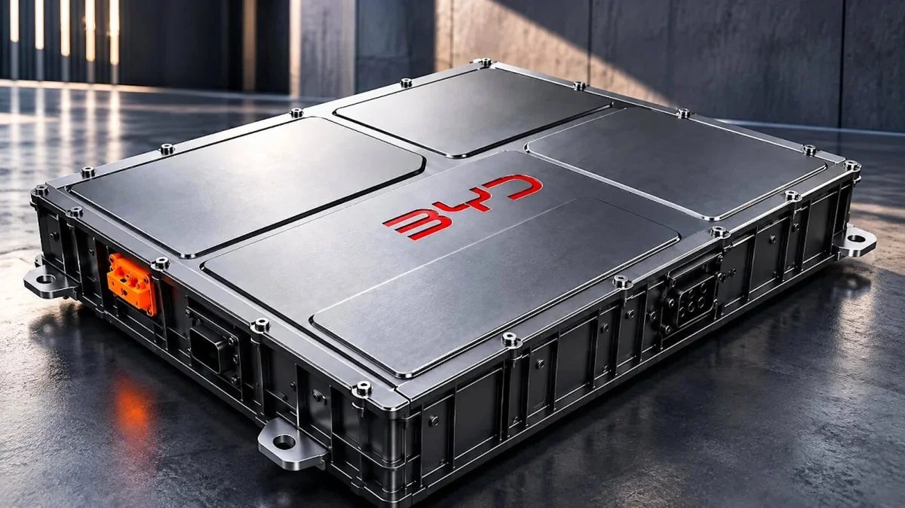

BYD patenteia bateria mergulhada em líquido isolante para conter o superaquecimento
Pedido publicado na China em 5 de outubro descreve módulos imersos em fluido dielétrico; empresa ainda não confirmou uso em carros.

A BYD estuda uma solução pouco comum para um dos maiores desafios dos carros elétricos: tirar o calor da bateria. Um pedido de patente publicado na China em 5 de outubro descreve módulos mantidos dentro de um líquido que não conduz eletricidade, o que permite o contato direto do fluido com os componentes sem risco de curto-circuito, segundo o Canaltech.
Como o líquido dielétrico envolve uma área maior do conjunto, o calor seria retirado com mais eficiência e com temperaturas mais uniformes entre as regiões da bateria, sem precisar passar antes por placas ou canais de refrigeração. Para proteger os conectores, o gabinete é dividido em dois ambientes — um seco, para as conexões, e outro com o fluido —, com passagens pela parte superior, onde a pressão é menor e o risco de vazamento cai.
O sistema foi pensado inicialmente para baterias e sistemas estacionários de armazenamento de energia, e a BYD ainda não o anunciou para seus veículos. A ideia surge, porém, num momento em que a marca busca recargas cada vez mais rápidas: em março, ela apresentou a segunda geração da bateria Blade e o sistema Flash, que leva a carga de 10% a 70% em cinco minutos.